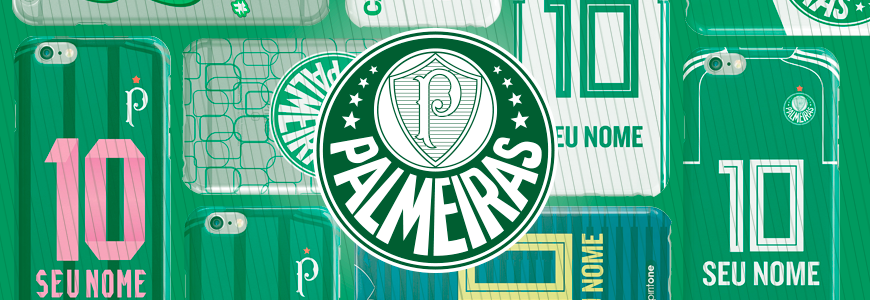

PALMEIRAS
GALERIA DE TITULOS

Fundado em 1914, o Palestra Italia levantou sua primeira taça já em 1920, em um jogo-desempate contra o então tetracampeão Paulistano. Treze anos depois, com o Torneio Rio-São Paulo de 1933, tornou-se o primeiro campeão interestadual do Brasil e, de quebra, o primeiro campeão da era profissional do futebol brasileiro.
Em 1951, um ano após a Copa do Mundo, o Brasil sediou o primeiro campeonato internacional de clubes campeões da história. E como não podia deixar de ser, quem levantou o troféu foi o Palmeiras, agora já com o novo nome e com a bandeira verde-amarela estampada no peito.
O início dos campeonatos nacionais no país coincidiu com as Academias de Futebol dos anos 60 e 70. Foram seis títulos ao todo (feito igualado apenas pelo Santos de Pelé) e um futebol de classe e toque de bola que encantou o mundo da bola e fez do Palmeiras o primeiro clube a ter a honra de representar a seleção brasileira.
A década de 1990 rendeu mais conquistas de Paulista, Rio-São Paulo e Brasileiro, mas foi coroada mesmo com o título da Copa Libertadores de 1999, o único que faltava na extensa galeria alviverde e que sacramentou o Palmeiras como grande campeão do primeiro século de futebol no Brasil.
Em 1951, um ano após a Copa do Mundo, o Brasil sediou o primeiro campeonato internacional de clubes campeões da história. E como não podia deixar de ser, quem levantou o troféu foi o Palmeiras, agora já com o novo nome e com a bandeira verde-amarela estampada no peito.
O início dos campeonatos nacionais no país coincidiu com as Academias de Futebol dos anos 60 e 70. Foram seis títulos ao todo (feito igualado apenas pelo Santos de Pelé) e um futebol de classe e toque de bola que encantou o mundo da bola e fez do Palmeiras o primeiro clube a ter a honra de representar a seleção brasileira.
A década de 1990 rendeu mais conquistas de Paulista, Rio-São Paulo e Brasileiro, mas foi coroada mesmo com o título da Copa Libertadores de 1999, o único que faltava na extensa galeria alviverde e que sacramentou o Palmeiras como grande campeão do primeiro século de futebol no Brasil.
PRINCIPAIS TÍTULOS
Títulos Internacionais
Mundial Interclubes: 1951;
Copa Libertadores da América : 1999;
Copa Sul-Americana Mercosul: 1998.
Títulos Nacionais
Campeonato Brasileiro: 1960 (invicto), 1967 (Torneio Roberto Gomes Pedrosa), 1967 (Taça Brasil), 1969, 1972, 1973, 1993, 1994, 2016 e 2018;
Copa do Brasil: 1998, 2012 (invicto) e 2015;
Copa dos Campeões: 2000.
Títulos InterEstaduais
Torneio Rio-São Paulo: 1933, 1951, 1965, 1993, 2000;
Torneio dos Campeões Rio-São Paulo - 1926, 1933, 1943 e 1948.